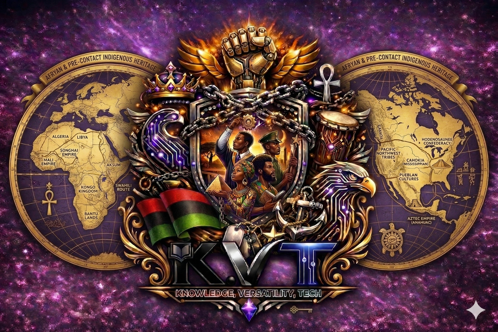

The Master Crest of K.V.T: A Legacy Reclaimed
This Master Crest stands as a visual tribute to resilience, intellect, and global contribution. It represents a journey of reclamation, honoring the ancestors while creating a foundational legacy for generations to follow.

I. Symbolic Breakdown
The Golden Power Fist & Wings (Crest Superior)
Reclaiming the "power fist" from modern political associations, this golden, angelic-winged fist is restored to its original significance: Unified Spiritual Strength. The fingers of the closed fist symbolize the five pillars of humanity: love, truth, peace, freedom, and justice. The wings represent divine protection and the ability of the spirit to rise above adversity.
The Ancient Spheres: Pre-Colonial & Pre-Contact Lineage
Flanking the central shield are two golden spheres representing a lineage that predates modern borders and colonization. The Left Sphere maps the vast pre-colonial empires and ancient trade routes of Africa, acknowledging the cradle of civilization. The Right Sphere maps Turtle Island—Pre-Contact North America—honoring the Indigenous Black tribes and sophisticated urban civilizations that thrived here before the arrival of colonizers.
The Iron Chains (The Shield Bindings)
Encircling the central shield, these chains represent the struggle, persecution, and systemic bonds that have attempted to hold back the progress of Black people throughout history. In this static image, they represent the weight of the past; in motion, they represent the moment of Breaking the Cycle, where determination and knowledge finally shatter the links of oppression.
The Egyptian Ankh (Dextris - Right)
A sacred symbol of ancient Egypt (Kemet), the Ankh represents the "Key of Life." It signifies eternal life, balance, and the profound contributions of Africa to spirituality, science, and the foundational understanding of existence.
The Djembe Drum (Sinistris - Left)
Originating from West Africa, the Djembe represents the "Heartbeat of the People." It symbolizes community, rhythm, communication, and the enduring power of cultural expression.
The Central Shield: Community & Contribution
This is the heart of the crest. The figures within represent the varied ways humanity contributes to the world: Intellectual and Academic Pursuit (the book), Service and Sacrifice (the military uniform), Creation and Building (the gear), and Connection to Heritage (the pyramid).
The Gilded Electronic & Standard Eagle (Supporters)
Two distinct golden eagles flank the shield. The Electronic Eagle signifies the future, technology, and electronic warfare. The Standard Eagle represents official military service and the sacrifices of Black service members.
The Pan-African Flag (Flag Dextris)
Flown beneath the Electronic Eagle, the colors Red (the blood that unites), Black (the people), and Green (the land and prosperity) stand as a banner of unity for people of African descent globally.
The Golden Crown with Purple Gem
Sitting at the top, this represents Sovereignty, Dignity, and Imperial Legacy, acknowledging pre-colonial royal and governing histories.
Military Dog Tags (Shield Base)
These are placed at the base to honor the contributions of thousands of Black service members whose sacrifices have often been minimized or erased.
II. The K.V.T Logo: Core Elements
The primary letters of the logo are more than just initials; they are the tools used to build a future for all.
The K (Knowledge)
Integrated with an open book, representing Empowerment through Education. It signifies the importance of researching "His-Story" (History), uncovering the truth, and ensuring contributions are properly cited.
The V (Versatility)
Featuring a sharp, silver/platinum finish with a stylized upward stroke. This represents Adaptability and Precision, symbolizing the strength and determination required to succeed despite obstacles.
The T (Tech)
A blue "T" embedded with integrated circuit traces. This represents mastery of modern tools and a professional background in technology and development, bridging the gap between ancient heritage and the digital age.
III. Mission Statement: The Heritage Reclamation Project
This Master Crest is not a product for sale, nor is it part of a profit-driven program. It is a profound, personal statement of advocacy, designed to ignite a fire of reclamation and pride.
We are tired of the credit for significant contributions being whitewashed or hidden. This project is a tribute to those who came before us—the inventors, warriors, philosophers, and creators whose genius has been overlooked—and a promise to those who will follow.
My goal is not to claim superiority; true equality means recognizing that no one is better than another. Instead, I am here to help reclaim our story. I believe that by reclaiming our dignity and acknowledging those whose contributions were swept under the rug and replaced with "False-credit," we can all learn and grow. Whether the contributor is Black, White, Tan, Woman, Man, or LGBTQ+, we believe in giving real citations to those who deserve the credit.
The Standard of Truth
This nation’s own history bears the receipts of our struggle. Even among the "Founding Fathers," the truth was often sidelined for the sake of power. We look to Thomas Paine, the author of Common Sense, whose words sparked the very Revolution this country celebrates. Paine was a true Founding Father who dared to call out the hypocrisy of the original drafting of the Declaration of Independence and the Constitution. He challenged the "loudest voices" in the room—those who claimed to build a nation of freedom while refusing to acknowledge the evil of slavery.
It is a documented fact that early drafts contained condemnations of the slave trade, only to be stripped away by a powerful minority before the ink was dry. We are the descendants of that deleted text. We are the proof that Paine was right, and we are the realization of the freedom that the original documents were too afraid to fully name.
We are not asking anyone for permission. We do not need approval to show the world WHO we are, WHERE we came from, WHAT we have become, and WHERE we are going. Just watch your TV, start your car, open your refrigerator, or turn on your AC—almost every convenience you enjoy as a given, we had a part in creating. From every genre of music to the mathematics that sent rockets to the moon, our fingerprints are everywhere.
We are here to say: "We have moved on, but we will never forget. We will never stop reclaiming our story, and we will never stop demanding the credit that is rightfully ours."
We are not here to tear anyone down. We are here to LEVEL UP! We are here to reclaim our story, and in doing so, we are also reclaiming the truth for everyone. Because the truth is that we all benefit from the contributions, creativity, and resilience of Black people, and indeed EVERYONE. We are here to give credit where credit is due, and to ensure that the legacy of our ancestors is honored and remembered.
The "rabbit hole" of our heritage goes deep. I invite you to jump down it. Because as the saying goes: "Give a person a fish, they eat for a day. Teach a person to fish, they EAT FOR LIFE!"
We are here to teach the world how to fish. We are here to reclaim our story. We are here to level up through creation.
And this Master Crest is just the beginning.